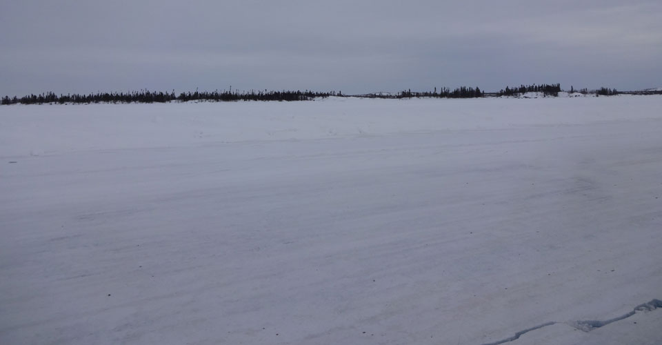

TCWRJV
NOREX - Tibbitt Contoyo Winter Road Joint Venture
The Tibbitt to Contwoyto winter road begins at Tibbitt Lake at the end of Highway 4 about 60km (36m) east of Yellowknife, NWT, Canada. It winds north linking four diamond mines: Ekati, Diavik, Snap Lake, and finally Tahera (which is now closed) at the north end of Contwoyto Lake, Nunavut Territory. Open for approximately 8-10 weeks, the winter road is the lifeline for mine re-supply and supplies various exploration properties and local tourism and outfitting camps.
Advisor, Safety & HSE Systems
January 2016 to September 2016
Yellowknife, NWT CANADA